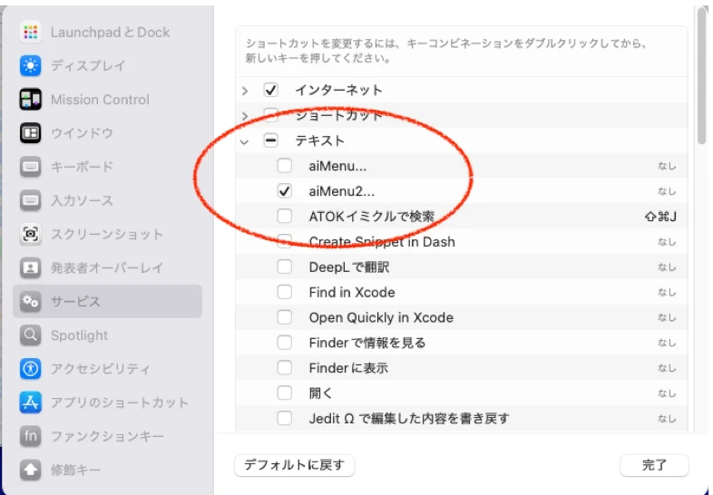
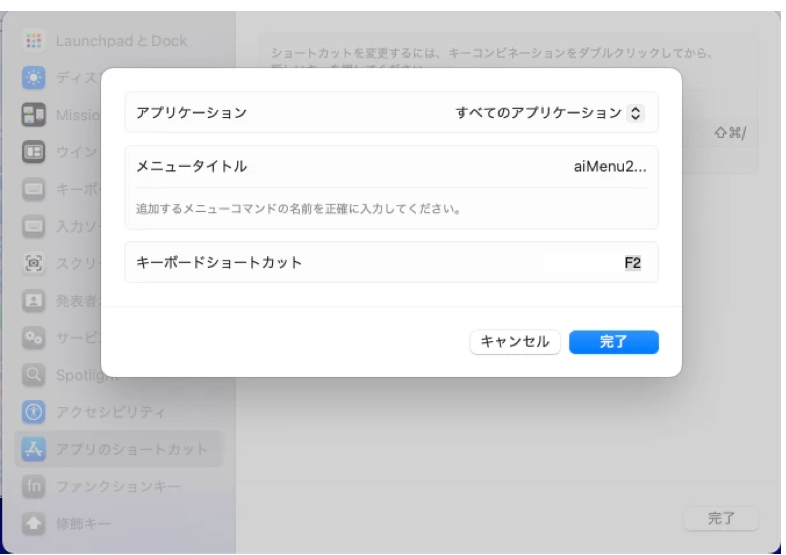
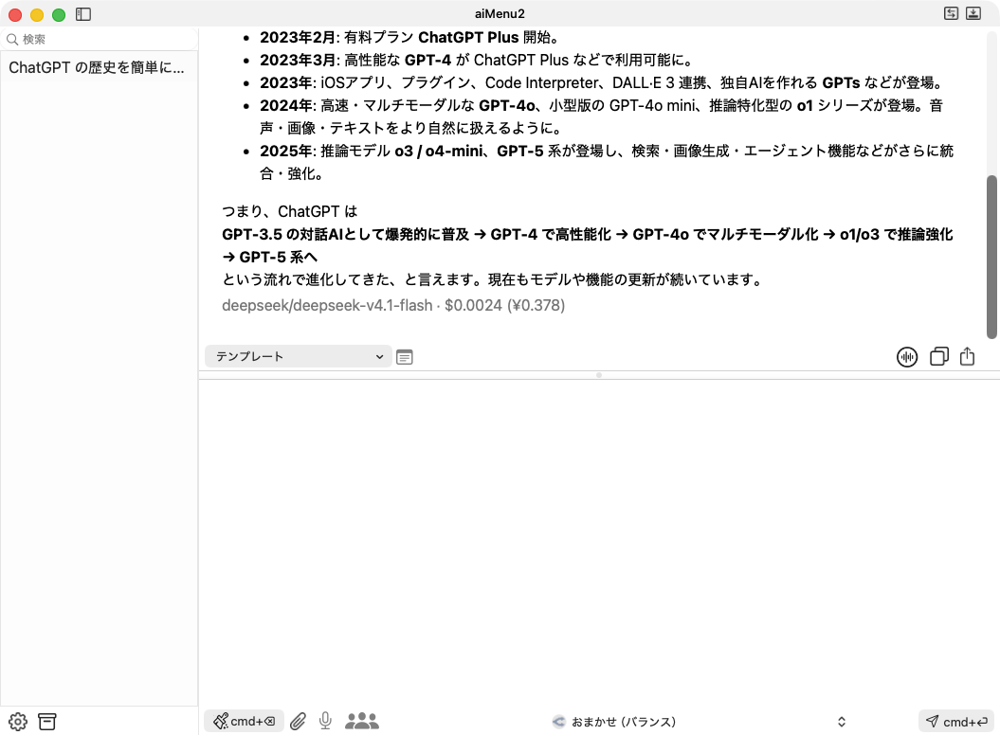
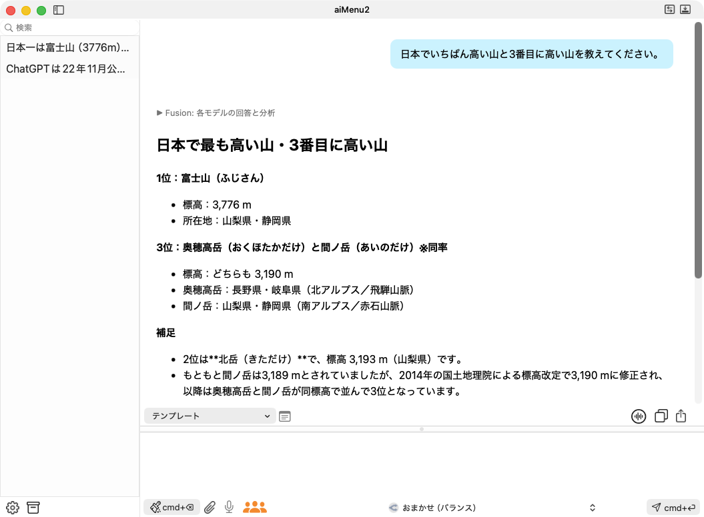
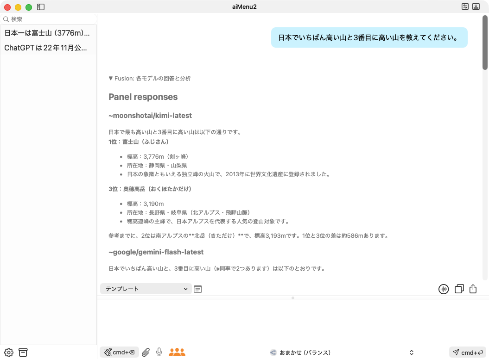
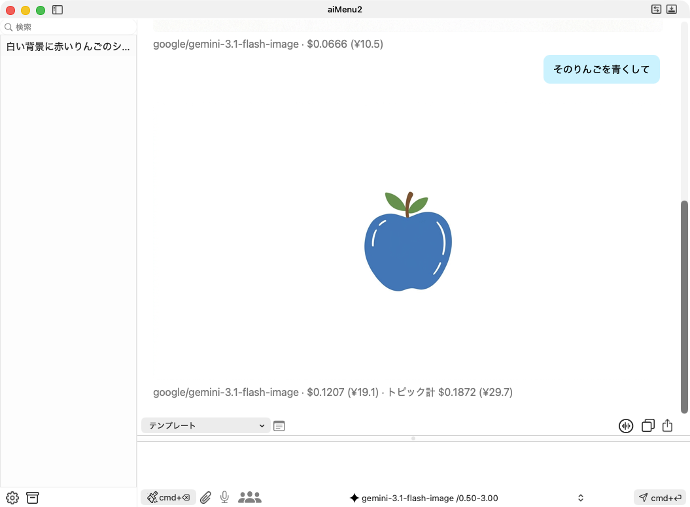
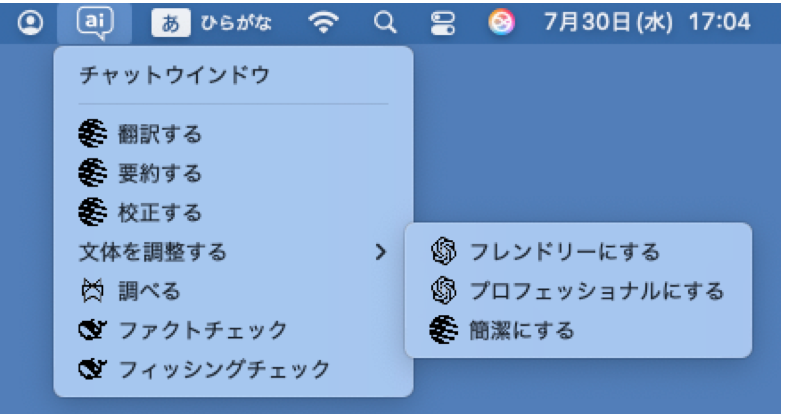
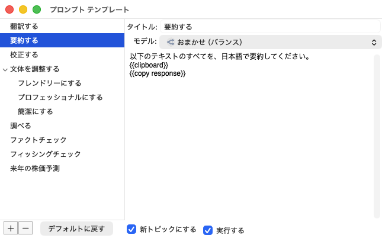

はじめに
生成 AI は、ChatGPT、Claude、Gemini、Perplexity、DeepSeek、Grok などが次々に登場し、日々進化しています。aiMenu2 は、300 種類を超えるモデルの中から、目的や予算に合わせて、いつでも最新・最適なモデルを選んで使える AI アシスタントです。
メール、ブラウザ、エディタ、表計算など、どのアプリで選んだテキストに対しても、ショートカットキーひとつで AI のメニューを呼び出せます。「翻訳する」「調べる」「校正する」「要約する」などのメニューがはじめから入っていて、自由に追加・変更できます。
特徴
- 300 以上のモデル：OpenRouter を通じて、ChatGPT、Claude、Gemini、Perplexity、DeepSeek、Grok などのモデルを使えます。「おまかせ」にすると、質問に合わせて OpenRouter がモデルを選びます。
- 使った分だけの料金：AI の利用料金は、使った分だけ OpenRouter のクレジットから差し引かれます。回答ごとに費用を表示するので、使いすぎの心配がありません。
- どのアプリからでも：テキストを選んでショートカットキーを押すだけで、プロンプトのメニューが開きます。
- Fusion：複数のモデルが同じ質問に答え、選んだモデルが 1 つの回答にまとめます。
- 画像・音声：画像の生成と続けての編集、高品質な読み上げ、マイクでの音声入力に対応しています。
- 豊富な書式：回答は Markdown、構文ハイライト、数式（TeX）などで読みやすく表示されます。
最初の一歩
App Store からダウンロードしたら、まず OpenRouter のアカウントを作ってクレジットを購入し、aiMenu2 から OpenRouter にログインします。次に、どのアプリからでも AI のメニューを呼び出せるように、ショートカットキーを設定します。
OpenRouter のアカウントとクレジット
aiMenu2 は、AI への問い合わせに OpenRouter を使います。OpenRouter のアカウントがあれば、多くの AI 事業者のモデルを、1 つのアカウントでまとめて使えます。
- ブラウザで https://openrouter.ai/ を開き、右上の「Sign in」から「Sign up」を選んでアカウントを作ります。メールアドレスのほか、Google アカウントなどでも登録できます。
- 右上のアカウントのメニューから「Credits」を開き、「Add Credits」でクレジットを購入します。料金は前払いで、使った分だけ差し引かれます。はじめは 10 ドル程度で十分です。
OpenRouter にログインする
メニュー「aiMenu2 > 設定 > 一般」を開き、API キー欄の上の「OpenRouter にログイン…」を押します。ブラウザで OpenRouter の画面が開くので、ログインして許可してください。aiMenu2 に戻ると、API キーが自動で設定されています。

OpenRouter の「Keys」のページで自分で作った API キーを、API キー欄に貼り付けて使うこともできます。
ショートカットキーの設定
ほかのアプリでテキストを選び、右クリック（または control キーを押しながらクリック）して、サービスメニューの「aiMenu2...」を選ぶと、aiMenu2 のプロンプトメニューが開きます。サービスメニューにショートカットキーを割り当てておくと、キーを押すだけでこのメニューを開けます。
1. サービスメニューを有効にする：「システム設定 > キーボード > キーボードショートカット… > サービス」を開き、「テキスト」の中の「aiMenu2...」をオンにします。

2. ショートカットキーを割り当てる：同じ画面の「アプリのショートカット」で「＋」を押します。「アプリケーション」は「すべてのアプリケーション」のまま、「メニュータイトル」に aiMenu2... と入力し、「キーボードショートカット」に使いたいキー（この例では F2）を割り当てます。メニュータイトルはサービスメニューの名前と同じでないと動かないので、ピリオドは半角で 3 つ入れてください。

割り当てたキーは、aiMenu2 の「設定 > 一般」の「サービスメニューショートカット」に表示されます。その横の「変更」を押すと、システム設定のキーボードショートカットの画面が開きます。
さらに便利な使い方：ボタンの多いマウスでは、ボタンの 1 つに aiMenu2 のショートカットキーを割り当てると、ボタンを押すだけでプロンプトメニューが開きます。トラックパッドでは、BetterTouchTool などで 3 本指のタップなどのジェスチャーに割り当てられます。
サブスクリプション
aiMenu2 は、月額プランと年額プランのサブスクリプションでご利用いただけます。インストールから 7 日間は無料でお試しいただけます。
7 日間を過ぎると、起動時にサブスクリプションの案内が表示されます。登録しなくてもアプリは引き続き使えますが、AI の回答のたびに登録をお願いする画面が表示されます。メニュー「aiMenu2 > ライセンス」からも登録できます。
AI の利用料金は、サブスクリプションとは別に、OpenRouter のクレジットから差し引かれます。
設定
メニュー「aiMenu2 > 設定」を選ぶか、チャットウィンドウ左下の歯車のボタンを押すと、設定のウィンドウが開きます。「一般」と「モデル」の 2 つのタブがあります。
一般設定
「一般」タブでは、aiMenu2 全体の動作を設定します（画面は前の節を参照）。「デフォルトに戻す」を押すと、最初の設定に戻ります。
- ログイン時に自動起動／トピック履歴を iCloud に保存
- Mac にログインしたときに aiMenu2 を起動するか、会話の履歴を iCloud Drive に保存して複数の Mac で共有するかを選びます。
- 外観モード・文字表示・最大トピック数・効果音
- 画面の明るさ（ライト／ダーク）、文字の大きさ、保存しておくトピックの数、効果音を設定します。
- 思考プロセスを隠す
- 推論するモデルが回答の前に考えた過程を、表示しないようにします。
- 読み上げエンジン・読み上げモデル・読み上げの声
- 回答の読み上げに、macOS の音声と OpenRouter の高品質な音声のどちらを使うかを選びます。OpenRouter を選んだときは、モデルと声も選べます。macOS を選んだときは、下の「読み上げ音声」と速度（rate）で声を選びます。
- 音声入力モデル
- マイクの音声を文字にするモデルを選びます。
- Fusion のパネル
- Fusion で答えるモデルの組み合わせを選びます。「品質重視」は大きなモデル、「速度重視」は軽いモデルで、速く安く答えます。
- OpenRouter API キー
- 「OpenRouter にログイン…」で自動で設定されます。右の https://openrouter.ai/ を押すと、OpenRouter のサイトが開きます。
- 共通システムプロンプト
- AI に、回答の仕方や役割をあらかじめ伝える文です。モデル設定の「追加システムプロンプト」とあわせて、問い合わせのたびに AI に送られます。
モデル設定
「モデル」タブでは、チャットウィンドウのモデル選択メニューに出すモデルを選び、モデルごとの設定をします。左の一覧でモデルを選ぶと、右にそのモデルの詳しい情報が表示されます。

- テンパラチャー
- 回答のばらつきを決めます。0 に近いほど決まった安定した回答に、1 に近いほど創造的で多様な回答になります。
- 最大トークン数
- 1 回の回答の長さの上限です。トークンは単語や記号のかたまりで、日本語 1 文字はおよそ 1〜2 トークンです。上限を超えると回答が途中で切れ、回答の最後に警告が表示されます。
- 価格 $/M
- 100 万トークンあたりの料金です。入力（prompt）と出力（completion）で違います。
- 入力モダリティ
- そのモデルに送れるデータの種類です。image があるモデルには画像を添付できます。PDF はどのモデルにも添付できます。
- プロバイダ優先
- 同じモデルを提供する会社が複数あるときに、どれを優先して選ぶかを指定します（標準・価格優先・速度優先・応答の速さ優先）。
- 推論
- 推論するモデルが、どれだけ深く考えるかを指定します（標準・なし・低・中・高・最大）。推論に対応していないモデルでは選べません。
- 追加システムプロンプト
- そのモデルだけに送るシステムプロンプトです。
おまかせ：一覧の「openrouter/auto:low」「openrouter/auto:medium」「openrouter/auto:max」は、チャットウィンドウでは「おまかせ（安さ優先）」「おまかせ（バランス）」「おまかせ（高性能）」と表示されます。質問の内容に合わせて、OpenRouter が適したモデルを選びます。
モデルの追加・削除：左下の「＋」を押すと、OpenRouter が提供しているモデルの一覧が開き、aiMenu2 に追加できます。モデルを選んで「−」を押すと削除できます。
チャットウィンドウの操作
aiMenu2 を起動するか、メニュー「ファイル > チャットウィンドウ」を選ぶと、チャットウィンドウが開きます。チャットウィンドウは、左のトピックビュー、右上のレスポンスビュー、右下のプロンプトビューに分かれています。境界線をドラッグすると、大きさを変えられます。

プロンプトビュー
プロンプトビューに質問（プロンプト）を入力し、下のメニューで使うモデルを選んで、右下の「cmd+↩」ボタンを押すと、AI に送られます。cmd+↩ を押すか、return キーを 2 回続けて押しても送れます。
左下の「cmd+⌫」ボタンを押すと、新しいトピックになり、それまでの会話の文脈がクリアされます。押さない限り、同じトピックの中では前の質問と回答を覚えたまま会話できます。cmd+⌫ キーでも新しいトピックにできます。
下のボタンには、次の働きがあります。
- クリップ：画像や PDF を添付します。押すとドロップする場所が開くので、ファイルをドロップします。画像は、画像に対応したモデルで使えます。PDF はどのモデルでも使えます。
- マイク：音声入力を始めます（音声入力）。
- 人のアイコン（Fusion）：オレンジにすると、次の質問から Fusion を使います（Fusion）。
音声入力
- マイクボタンを押すか、control キーを 2 回押すと録音が始まり、マイクのボタンが赤い波形になります。
- 話し終えて 2 秒たつと、その部分を文字にしてプロンプトに追加し、そのまま次の発話を待ちます。
- 録音中にウィンドウの中をクリックするか、control キーを 1 回押すと、すぐに区切って文字にします。
- ダブルクリックするか、control キーを 2 回押すと、録音を終えます。
はじめて使うときは、macOS がマイクの使用の許可を求めます。「システム設定 > プライバシーとセキュリティ > マイク」でも許可できます。
レスポンスビュー
AI の回答が表示されます。回答の最後には、実際に答えたモデルの名前と、その問い合わせの費用（ドルと円）が表示されます。同じトピックで 2 回目以降の回答には、トピックの合計（トピック計）も表示されます。
Perplexity のモデルなどが Web を検索して答えたときは、本文の［1］［2］などの番号から引用元を開けます。引用元の一覧は、回答の最後に「出典」としてまとめて表示されます。
レスポンスビューの右上のボタンには、次の働きがあります。
- 読み上げ：オンにすると、回答を読み上げます。読み上げ中に押すと止まります。
- コピー：会話をクリップボードにコピーします。
- 共有：保存のダイアログが開き、会話を PDF ファイルとして保存できます。
左上の「テンプレート」から、プロンプトテンプレートを選んで実行できます（プロンプトテンプレート）。shift キーを押しながら選ぶと、実行せずに内容をプロンプトビューに入れます。
Fusion（複数の AI に相談）
人のアイコンのボタンをオレンジにして質問すると、複数のモデルが Web を検索しながら同じ質問に答えます。分析役のモデルがそれらを比べたうえで、選んでいるモデルが 1 つの回答にまとめます。重要な質問や、意見が分かれそうな質問に向いています。

回答の先頭の「▶ Fusion: 各モデルの回答と分析」を押すと、それぞれのモデルの回答と、一致した点・食い違った点などの分析を確かめられます。

- 答えるモデルの組み合わせは、「設定 > 一般」の「Fusion のパネル」で選べます。
- 複数のモデルに問い合わせるので、費用は通常の 4〜5 倍ほどかかり、回答まで 1〜2 分かかることがあります。
- テンプレートに
{{fusion}}と書くと、そのテンプレートだけ Fusion を使います。
画像の生成と続けての編集
画像を生成できるモデル（たとえば google/gemini-3.1-flash-image）を「設定 > モデル」で追加して選び、「〜の絵を描いて」と頼むと、回答の中に画像が表示されます。続けて「その絵を青くして」のように頼むと、直前の画像をもとに描き直します。

画像をクリックすると保存のダイアログが開き、画像をファイルとして保存できます。
トピックビューとアーカイブ
トピックビューには、AI とやり取りした会話（トピック）の一覧が表示されます。トピックを選ぶと、その会話がレスポンスビューに表示され、続けて質問すると、その会話の文脈のまま対話できます。トピックの名前は、最初の質問と回答から自動で付けられます。
- トピックをダブルクリックすると、名前を変えられます。delete キーで削除できます。
- トピックを右クリックすると、名前の変更・削除・アーカイブへの移動ができます。マウスを乗せると、そのトピックの費用の合計が表示されます。
- 上の検索欄に文字を入れると、名前と会話の内容から検索します。
- トピックは「最大トピック数」に達すると古いものから自動で削除されますが、アーカイブに移したトピックは削除されません。
チャットウィンドウ左下の箱のボタンを押すと、アーカイブウィンドウが開きます。アーカイブはカテゴリーごとに分かれていて、右クリックのメニューから、カテゴリーの名前の変更・削除や、トピックをトピックビューに戻す「アンアーカイブ」ができます。
プロンプトテンプレート
よく使うプロンプトは、テンプレートとして保存しておくと、メニューからすぐに実行できます。メニューは階層になっていて、カテゴリーごとに分けられます。テンプレートを呼び出す方法は 3 つあります。
- サービスメニューから：ほかのアプリでテキストを選び、右クリックして「サービス > aiMenu2...」を選ぶか、ショートカットキーを押します。選んだテキストを使ってテンプレートが実行されます。
- ステータスメニューから：メニューバーの吹き出しのアイコン「ai」を押すと、プロンプトメニューが開きます。クリップボードの内容を使ってテンプレートが実行されます。
- チャットウィンドウから：レスポンスビューの左上の「テンプレート」から選びます。

テンプレートエディタ
メニュー「ファイル > テンプレートエディタを開く」を選ぶか、チャットウィンドウの「テンプレート」の右のボタンを押すと、テンプレートエディタが開きます。

- 左の一覧で右クリックすると、テンプレートやカテゴリーを追加できます。左下の「＋」「−」でも追加・削除できます。
- 右側で、タイトル、使うモデル、プロンプトを入力します。モデルを指定しないと、そのときチャットウィンドウで選んでいるモデルを使います。
- 「新トピックにする」をオンにすると、実行する前にそれまでの会話の文脈をクリアします。
- 「実行する」をオンにすると、すぐに実行します。オフにすると、プロンプトビューに内容を入れるだけで、実行はしません。
マクロ
プロンプトに次のマクロを書くと、実行するときに置き換えたり、動作を切り替えたりします。プロンプトの欄で右クリックすると、メニューから挿入できます。
| マクロ | 働き |
|---|---|
{{clipboard}} | 選んだテキスト、またはクリップボードのテキストに置き換えます。 |
{{copy response}} | 回答をクリップボードにコピーします。 |
{{speech response}} | 回答を読み上げます。 |
{{hide thinking}} | 推論するモデルの思考の過程を表示しません。 |
{{effort high}} | 推論の強さを指定します。none・low・medium・high・max が使えます。 |
{{fusion}} | そのテンプレートだけ Fusion を使います。 |
{{compact window}} | チャットウィンドウを小さな表示にします（{{minimize window}} も同じ）。 |
{{normal window}} | チャットウィンドウを通常の表示に戻します。 |
使用額の確認
メニュー「ファイル > 使用額…」を選ぶと、次の情報がまとめて表示されます。「OpenRouter の利用履歴を開く」を押すと、OpenRouter のサイトで詳しい利用履歴を確かめられます。
- OpenRouter のクレジット残高と、これまでの購入額・使用額
- 今の API キーの、今日・今週・今月の使用額と、上限・有効期限
- aiMenu2 が記録した、月ごとの費用の合計（保存しているトピックとアーカイブの分）
困ったときは
- 質問しても答えが返ってこない
- OpenRouter のクレジット残高と、API キーの上限・有効期限を「ファイル > 使用額…」で確かめてください。別のモデルや、新しいトピックで試すと答えが返ることもあります。
- ショートカットキーを押しても何も起きない
- 「システム設定」のサービスで「aiMenu2...」がオンになっているか、アプリのショートカットのメニュータイトルが
aiMenu2...（ピリオド 3 つ）になっているかを確かめてください。 - 音声入力が使えない
- 「システム設定 > プライバシーとセキュリティ > マイク」で、aiMenu2 にマイクの使用を許可してください。
そのほかのご質問や不具合のご報告は、aiMenu2 サポートページからお寄せください。メニュー「ヘルプ > aiMenu2 サポートページ」からも開けます。